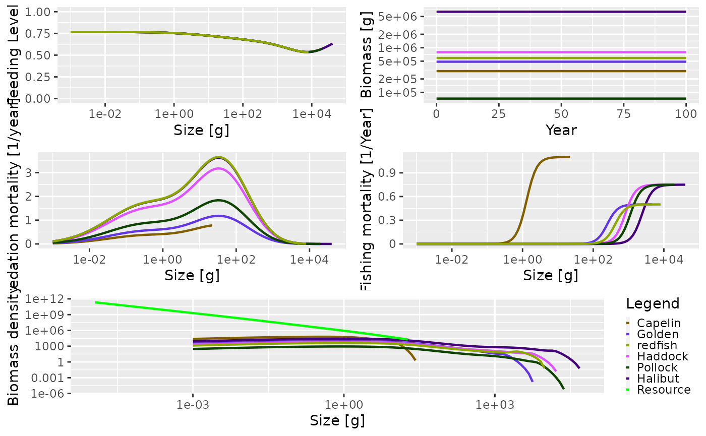
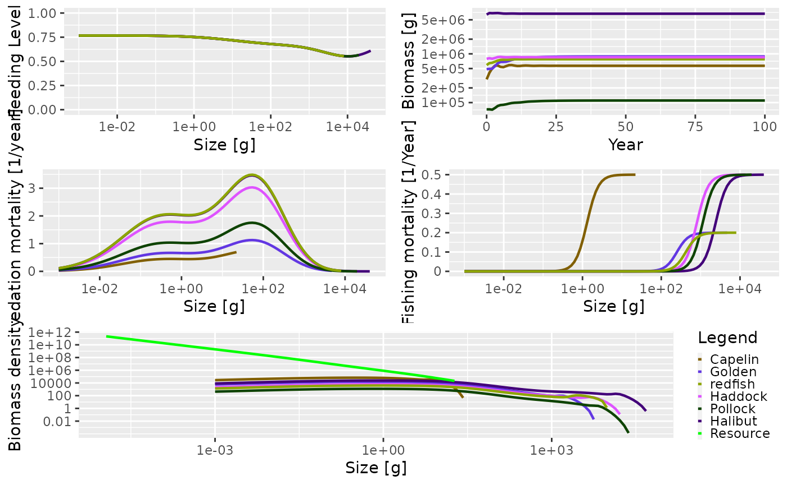

Mizer includes a number of calibrated multi-species systems:
NS_param from Blanchard et al, 2014; included with the mizer package). This calibration is made with a species-specific interaction matrix and gear. Note of caution: this calibration is done with eRepro=1. This means that simulations overestimates reproduction severely, and the calibration should be used with caution.NorthSea_params), Baltic Sea (Baltic_params), Benguela current (Benguela_params), North East US Continental Shelf (NEUSCS_params), and the Barents Sea (Barents_params) (from Jacobsen et al, 2016). These systems are calibrated with purely size-based predation, i.e., no species-specific interactions. They are set up with three fishing gears targeting small, medium and large species.The models are available as MizerParams objects. Running, and plotting is as simple as:
library(mizerExamples)
## Loading required package: mizersim <- project(Barents_params) plot(sim)

The models are calibrated to specific efforts for each of a number of fishing gear. For example, the Barents Sea model has three gears: small, medium, and large, and is callibrated with the efforts:
getInitialEffort(Barents_params)
## small medium large
## 1.10 0.50 0.75To see which species are caught by these gears, we look at the gear parameters data frame:
gear_params(Barents_params)
## species gear sel_func catchability sigmoidal_weight sigmoidal_sigma
## 1 Capelin small sigmoid_weight 1 1.3 3
## 2 Golden medium sigmoid_weight 1 250.0 3
## 3 redfish medium sigmoid_weight 1 420.0 3
## 4 Haddock large sigmoid_weight 1 800.0 3
## 5 Pollock large sigmoid_weight 1 1125.0 3
## 6 Halibut large sigmoid_weight 1 2400.0 3Simulating with a different effort is done by:

The calibrated efforts are described in the help pages for each calibrated model.